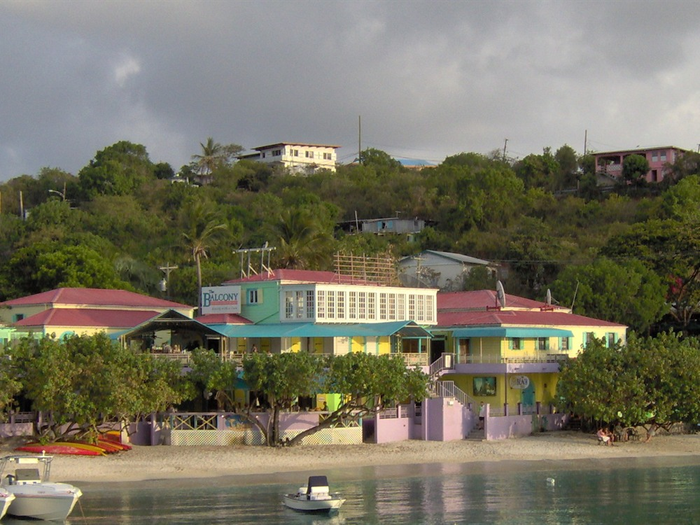

-400.jpg)
Bustling ferry port town featuring a walkable waterfront, colorful shops, restaurants, and easy access to beaches, trails, and marine excursions.
General Information
Most businesses operate from mid‑morning through evening
Ferries, dining, tours, and excursions priced separately
How to Get There
From Cruz Bay: The town center, ferry dock, shops, restaurants, and beaches are all easily reached on foot, with taxis available for travel to other areas of the island.
Overview
Cruz Bay is the main town and ferry port of St. John, the smallest of the three main U.S. Virgin Islands, with fewer than 3,000 residents. It is famous as the gateway to Virgin Islands National Park, which covers about 60 percent of the island, and for its pastel buildings, open-air cafes and relaxed island atmosphere.
Visitors arrive by ferry from Red Hook on St. Thomas, about 20 minutes away, or from Charlotte Amalie. They come to shop at Mongoose Junction and Wharfside Village, eat at waterfront restaurants and bars, pick up supplies, and take open-air taxis to the beaches, trails and historic sites of the national park, which is one of the most beautiful in the Caribbean.
History
The Taíno and earlier peoples lived on St. John before European settlement. The Danes claimed the island in 1718 and established sugar plantations worked by enslaved Africans. In 1733, in one of the earliest major slave rebellions in the Americas, enslaved people took over the fort at Coral Bay and held the island for months before French and British troops helped the Danes recover it. Slavery ended in the Danish colony in 1848, and the plantation economy declined. Laurance Rockefeller bought much of the island and donated the land to create Virgin Islands National Park in 1956, which preserved it from development. Cruz Bay grew as the port and commercial center, and Hurricanes Irma and Maria in 2017 caused heavy damage before the town recovered.
Sightseeing and Popular Landmarks
The ferry dock and the small waterfront are the center of the town, with colorful buildings, restaurants and shops, and the Cruz Bay Visitor Center next to the dock offers maps and park information. Mongoose Junction is a stone shopping center with local crafts, and Wharfside Village is a waterfront plaza with bars and restaurants. The Lind Point Overlook and the Lind Point Trail climb the hill above town for views of Cruz Bay and the surrounding islands. Open-air safari taxis carry visitors to the north shore beaches.
Culture and Museums
Cruz Bay's culture is expressed in its festivals, music and food. The St. John Festival, held in late June and July 4th, features parades, steel bands, calypso and fireworks, and the Cruz Bay waterfront comes alive with food stalls. The National Park Service's visitor center and the park's historical sites, including the Annaberg Sugar Plantation ruins and the Reef Bay petroglyphs, tell the story of the island's Taíno, Danish and enslaved peoples. Local food includes fresh fish, conch, johnnycakes and the island's rum drinks.
Parks
Virgin Islands National Park begins a short walk from town. Hawksnest Beach, Honeymoon Beach and the north shore beaches of Cinnamon, Trunk and Maho bays have white sand and clear water, with snorkeling trails such as the Coral Reef Underwater Park Trail. Trails like the Reef Bay Trail and Ram Head Trail lead through dry forest to old ruins, tide pools and cliffs.
Seasons and Weather
Cruz Bay has a tropical climate with warm weather all year, typically in the 80s °F with trade winds. The dry season from December to April is the busiest and most comfortable time, with the best conditions for hiking and snorkeling, while the rainy season runs from May to November, and hurricane season peaks from August to October. Ferries run daily but may be limited by weather, and some restaurants and shops close in the slow months of September and October.
This article uses material from the Wikipedia articles and official tourism pages for Cruz Bay and the U.S. Virgin Islands, which are released under the Creative Commons Attribution-Share-Alike License 3.0. Additional information from the U.S. Virgin Islands Department of Tourism, National Park Service: Virgin Islands National Park, National Weather Service San Juan and the official websites of the attractions mentioned.
